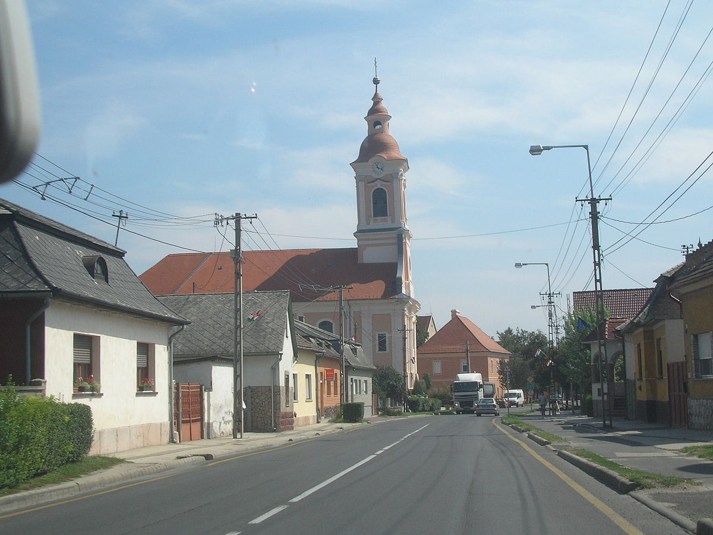
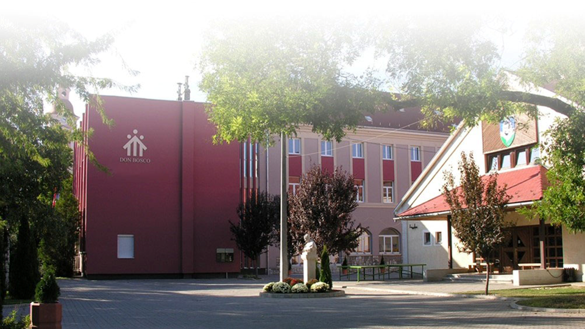

Esztergomban születtem 1999.05.26-án, gyerekkorom nagy részét pedig Nyergesújfalun töltöttem. Tanulmányaimat a Kernstok Károly Általános Iskolában kezdtem meg, ahol kiváló tanulmányi eredményekkel végeztem 6 év után. Általános iskolában több rajzversenyen is dobogós helyezést értem el.
2012-ben kezdtem meg a tanulmányaimat a Szalézi Irinyi Középiskolában(most Zafféry Károly Szalézi Középsikola).A középsikolai éveimben narrátori munkát végeztem az iskolai rendezvényeken amikért többszöri igazgatói dícséretben részesültem. 2017-18-ban végeztem és 2019-ben iratkoztam be az egyetem géopészmérnöki karára. Érdeklődési köreimbe tartozik a matek,fizika és a zene.
